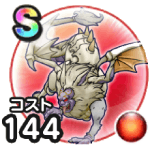

ハヌマーン
宝の地図こころ最大コスト+4スキルの斬撃・体技ダメージ+7%メラ属性斬撃・体技ダメージ+10%会心率+4%混乱耐性+10%【ゴドハン】みのまもり+10【魔剣士】すばやさ+20 / 9.0点
くわしい特徴
【ランク特殊効果】 こころ最大コスト+4スキルの斬撃・体技ダメージ+7%メラ属性斬撃・体技ダメージ+10%会心率+4%混乱耐性+10%【ゴドハン】みのまもり+10【魔剣士】すばやさ+20

宝の地図こころ最大コスト+4スキルの斬撃・体技ダメージ+7%メラ属性斬撃・体技ダメージ+10%会心率+4%混乱耐性+10%【ゴドハン】みのまもり+10【魔剣士】すばやさ+20 / 9.0点
【ランク特殊効果】 こころ最大コスト+4スキルの斬撃・体技ダメージ+7%メラ属性斬撃・体技ダメージ+10%会心率+4%混乱耐性+10%【ゴドハン】みのまもり+10【魔剣士】すばやさ+20